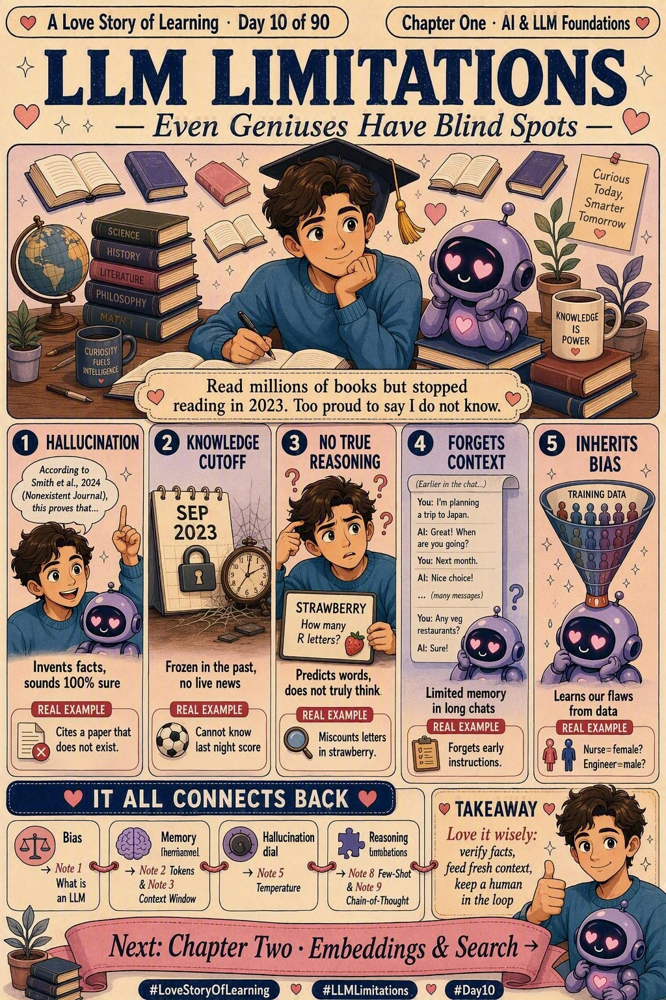

📜 The 30-second brief
For nine notes we fell in love with what a Large Language Model can do. Note 10 is the honest conversation: an LLM limitation is a built-in weakness that comes straight from how the model works. Remember our very first idea — it predicts the next most-likely token from patterns in its training data. It does not look up truth, understand meaning, or calculate like a human.
So these limits aren't bugs waiting for a patch — they're the shadow cast by the design itself. Knowing them is what separates someone who is dazzled by AI from someone who can actually be trusted to use it well.
💌 A fresh analogy: the brilliant friend who stopped reading
Picture a friend who read millions of books — but stopped reading in 2023, never leaves the house to check a fact, and is far too proud to ever say "I don't know." Ask them anything and the answer comes back instantly, warmly, confidently. Usually right… but every so often they invent a fact so smoothly you'd never think to doubt it.
That friend is an LLM. Wonderful to have beside you — as long as you know which answers to double-check. Loving them wisely doesn't mean loving them less; it means knowing where their blind spots are and covering them. 💛
🔍 The 5 big blind spots
| Limitation | What actually happens | Real example |
|---|---|---|
| 🌀 Hallucination | Invents facts, sources or quotes and states them with total confidence — it optimises for plausible, not true. | Citing a research paper or legal case that doesn't exist. |
| 📅 Knowledge cutoff | Only knows the world up to its training date; anything newer simply isn't in its head. | "Who won last night's match?" — impossible without live search. |
| 🧮 No true reasoning | Predicts words, doesn't calculate. Multi-step logic and exact maths can quietly break. | Nailing an essay but fumbling simple arithmetic or counting. |
| 💬 Limited context memory | Sees only a fixed window of text; in long chats the earliest details fall off the edge. | Forgetting an instruction you gave 40 messages ago. |
| ⚖️ Inherited bias | Learns from human data, so it absorbs our stereotypes and imbalances too. | Assuming a "nurse" is female or an "engineer" is male. |
🧵 How today ties back to our story so far
Here's the beautiful part — you already met most of these blind spots. Note 10 doesn't add nine new ideas; it gathers the threads we've been pulling since Note 1 and names the shape they make.
| Today's limitation | The note where we first felt it | The thread that connects them |
|---|---|---|
| ⚖️ Inherited bias | Note 1 · What is an LLM? | "It learns patterns from training data" — the very sentence that gave the model its genius also quietly planted its bias. |
| 💬 Limited context memory | Note 2 · Tokens & Note 3 · Context Window | The context window we studied is the memory limit — measured in tokens, it's the exact reason long chats forget the beginning. |
| 🛡️ Managing the limits | Note 4 · Prompt Engineering & Note 7 · System vs User Prompt | Clear prompting and system guardrails were never just "nice to have" — they're how we steer around vague reasoning and unsafe drift. |
| 🌀 Hallucination (the dial) | Note 5 · Temperature & Top-P | Turning creativity up makes answers more inventive — and more likely to wander into confident fiction. The "hallucination dial" was in our hands the whole time. |
| 🌀 Hallucination (headline) | Note 6 · Hallucination | We already met this face-to-face — today it simply takes its place as the headline limitation of the whole family. |
| 🧮 No true reasoning | Note 8 · Few-Shot & Note 9 · Chain-of-Thought | Both exist because the model can't truly reason. Worked examples and "think step by step" are our workarounds for this exact weakness — and Note 9 even warned CoT never removes hallucination. |
| 📅 Knowledge cutoff | → Note 11 · Embeddings | The one limitation we haven't solved yet. Giving AI a searchable memory is where Chapter Two begins. 💕 |
The through-line: almost every "cool feature" we celebrated was secretly a coping strategy for one of these limits. Understanding the limits is understanding why the whole toolkit exists.
💡 Why it matters (and where it bites)
- Trust & safety. A confident hallucination in a legal, medical or financial answer can do real damage.
- Production systems. If your pipeline feeds an LLM output downstream, an invented value silently corrupts everything after it.
- Long conversations. Context limits mean your careful early instructions can quietly stop being honoured.
- Fairness. Inherited bias can leak into hiring, recommendations, or customer-facing text.
- Maturity signal. Anyone can praise AI — knowing its edges is what makes you the person others trust to deploy it.
🏭 Real-world example: the runbook that never existed
An SRE asks an LLM, "What's the rollback command for our payments service?" The model answers
instantly and confidently: "Run svc rollback --payments --safe." Clean, plausible,
reassuring — and completely invented. That flag doesn't exist. Run it at 2 a.m. during an
incident and you've made things worse.
The fix isn't to distrust the model — it's to ground it. Give it the actual runbook as context (that's retrieval), and ask it to quote the source. Same brilliant friend — but now answering from the open book on the table instead of from memory. That single shift is the whole reason Chapter Two exists.
🛡️ How to love the limits (practical toolkit)
- Verify high-stakes facts. Treat numbers, names, dates and citations as "draft until checked."
- Give it fresh context. Paste the latest data or connect it to search/RAG so it isn't guessing from an old memory.
- Ask for its reasoning. "Show your steps" (our Note 9 trick) surfaces logic slips before they cost you.
- Keep long chats tight. Re-state key instructions and summarise so nothing falls out of the context window.
- Lower the temperature for factual work so the model wanders less into confident fiction.
- Stay human-in-the-loop. Use the model as a fast first draft — you own the final judgement.
⚠️ Common misconceptions
- "If it sounds confident, it's correct." No — confidence and correctness are unrelated in an LLM.
- "A bigger model has no limitations." No — scale reduces some errors but never removes hallucination, cutoff, or bias.
- "It can just look things up." No — not unless you explicitly connect it to a tool or retrieval system.
- "More reasoning removes hallucination." No — Note 9 already warned us: CoT helps logic, not truthfulness.
- "Bias means the model is broken." No — bias is inherited from human data; managing it is part of the job, not a defect to ignore.
🎓 Quick self-test (exam-style)
- Why do LLMs hallucinate?
They predict plausible-sounding tokens, not verified facts — so a confident, false answer is a natural output. - What is a knowledge cutoff?
The training date beyond which the model knows nothing, unless connected to live data. - Why can an LLM fail simple maths?
It predicts words rather than truly calculating — it has no real reasoning engine. - What causes "forgetting" in long chats?
The fixed context window — early text falls outside what the model can currently see. - Where does bias come from?
The human-generated training data, whose imbalances the model learns along with everything else. - Name one mitigation for each.
Verify facts · give fresh context/RAG · ask for reasoning · summarise long chats · review for fairness.
📚 Key terms to carry forward
- Hallucination — a confident but false or invented output.
- Knowledge cutoff — the last date represented in the model's training data.
- Reasoning gap — the model predicts language rather than truly calculating or thinking.
- Context window — the fixed amount of text the model can "see" at once.
- Bias — unfair patterns inherited from training data.
- Grounding — supplying real, external facts so the model answers from source, not memory (the seed of Chapter Two).
⚡ 60-second flashcard (last look before the exam)
| Define it in one breath | Built-in weaknesses that come from how LLMs predict text. |
| The mental model | A brilliant friend who stopped reading in 2023 and won't say "I don't know." |
| The 5 blind spots | Hallucination · Knowledge cutoff · No true reasoning · Context limit · Bias. |
| Bias traces to | Note 1 · What is an LLM? (learns patterns from data). |
| Memory limit traces to | Note 2 Tokens & Note 3 Context Window. |
| Hallucination dial | Note 5 · Temperature & Top-P. |
| Reasoning patches | Note 8 Few-Shot & Note 9 Chain-of-Thought. |
| The unsolved one | Knowledge cutoff — solved by embeddings/retrieval in Chapter Two. |
| Golden rule | Love it for speed and range — verify facts and stay human-in-the-loop. |
| Interview line | "LLMs are next-token predictors, not databases or reasoning engines." |
🖼️ Today's cheat sheet
The same image shared on the LinkedIn post for Note 10.

✨ Next spark
We've just named the one limitation we haven't beaten — the model only knows its frozen past. So what if we could hand it an open book and let it answer from real, current facts instead of memory? That's exactly where Chapter Two · Embeddings & Search begins — and it opens with Note 11 · What are Embeddings?, teaching AI to turn meaning into numbers it can search. 💕